教學 × 演講現場
經常出席各式的活動、擔任講師、技術交流
從國小到大學、從企業內訓到大型 AI 講座，這幾年累積下來的教學與分享現場。
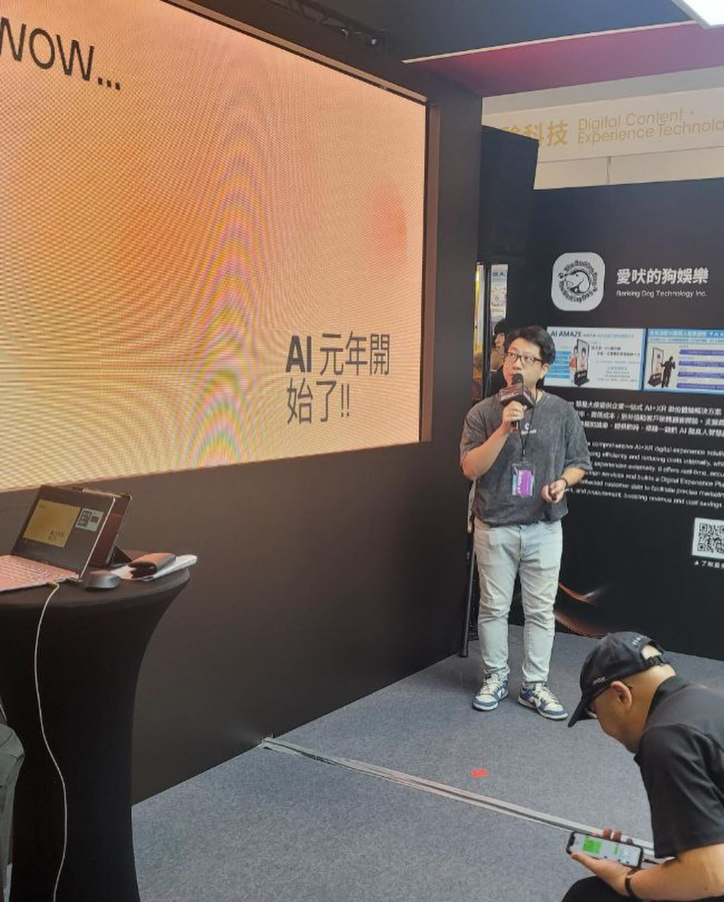
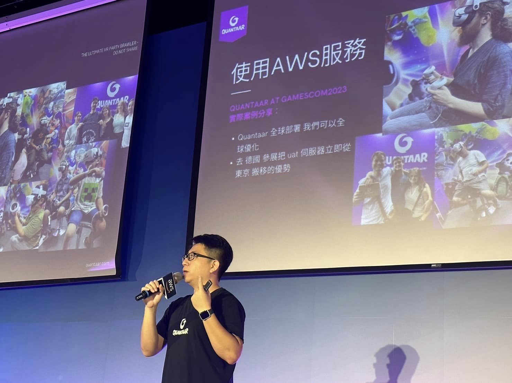
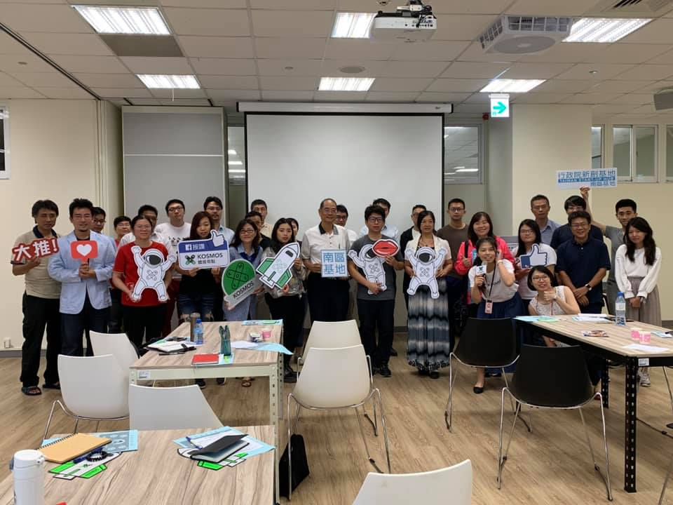
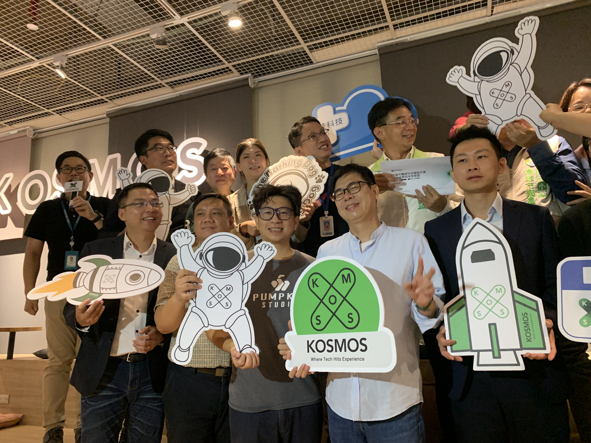
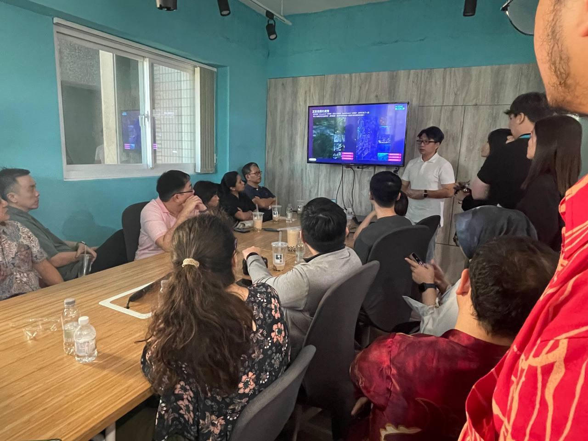
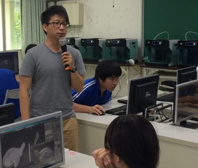
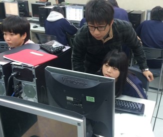
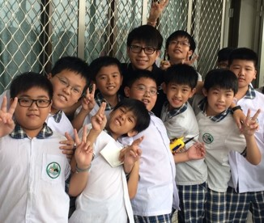
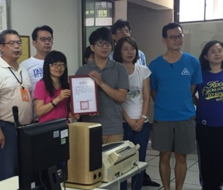

03 / 31
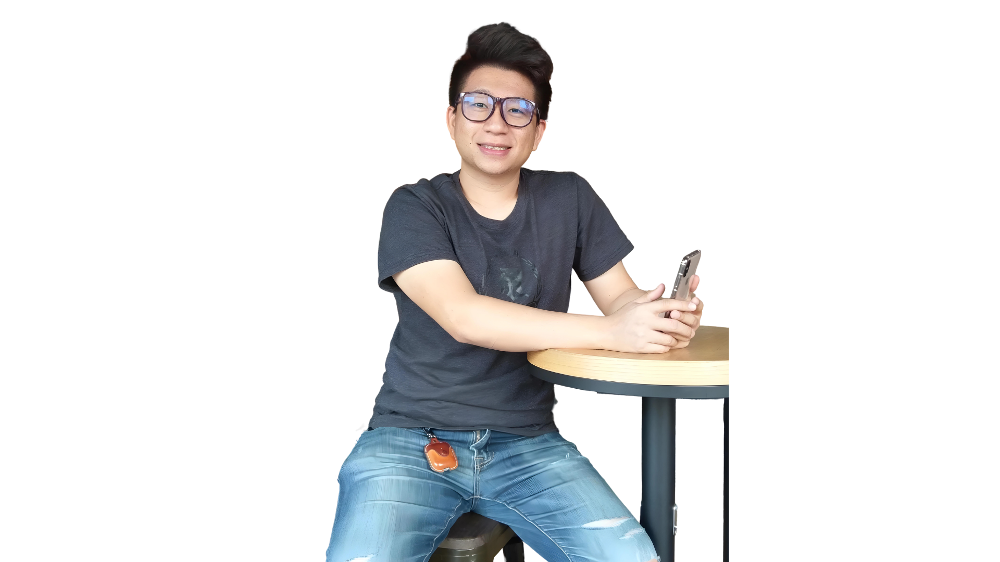
從國小到大學、從企業內訓到大型 AI 講座，這幾年累積下來的教學與分享現場。









▶ 我這幾年實際用過的工具軌跡。Claude AI 是目前最常駐的一個。
"現在最強的，下個月可能就換人了。"
AI 進步太快，選擇要依照自己的使用習慣和行業需求，不是追排名。
月制試用，找到最適合自己行業和習慣的工具再說。
"而是一塊踏入 AI 育兒的入門磚。"
你已有教育程度、社會經歷、和強大的判斷力。
你能辨識 AI 答覆的正確性，也能持續溝通直到獲取真正有用的解答。
"你是用 AI 最有效率的那群人。"
⬆ 這些方法都很好，但都需要大量的 時間 與 精力。
"學習可以這麼有效率，真的有種發現新大陸的感覺。"
"而是讓身為家長的我們，
變得更強、更有料、更有底氣。"
太累的時候，開啟 AI 語音模式，讓它說故事給孩子聽。每次冒險，睿寶都會帶著四位夥伴一起出發。
"五人一起的冒險故事 — 每天都有新章節。"
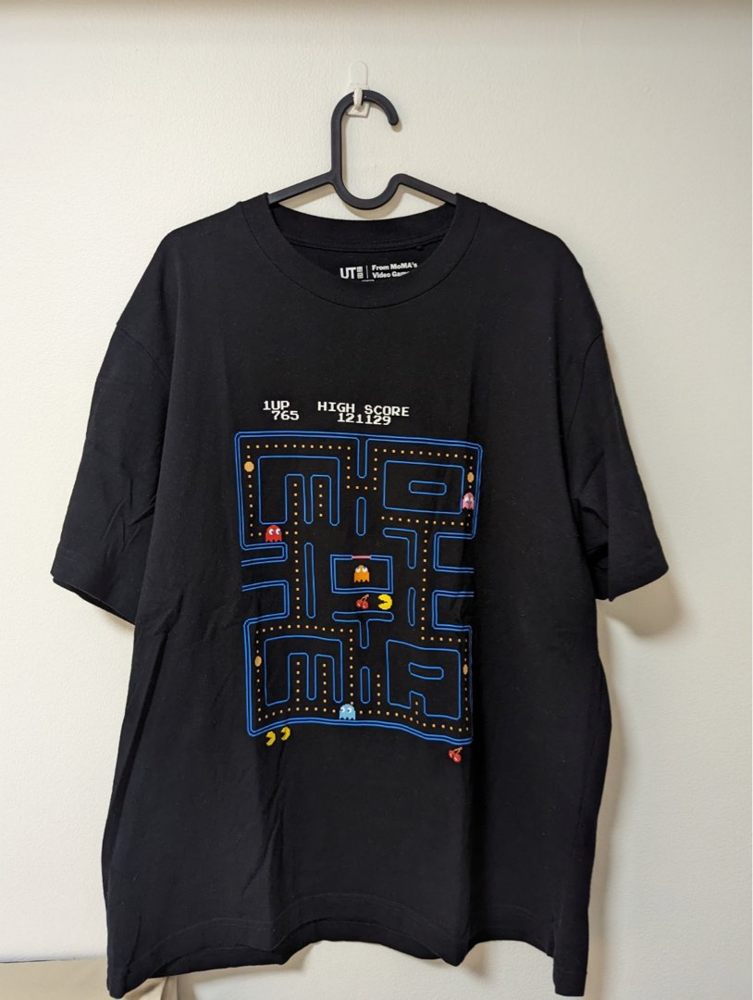
↑ 左邊就是 AI 從那件 T 恤生成的可玩遊戲，整個過程不到 5 分鐘。
把你喜歡、認同理念的人，整理成一名 AI 顧問。收集他們的 YT、Podcast、網路文章、理念，建立人設，之後就能隨時「請教」。
當我們規劃要去一個旅遊景點，不要只是「去玩」。開始問問題，把每一次出遊變成一場學習之旅。
範例：去高雄旗山一日遊
左側可拖曳節點 · 點擊展開 · 滾輪縮放
把學到的知識，用 AI 工具轉化成孩子更有感的形式。
每一位舉手的家長，都讓自己的孩子多了一個更強大的爸爸或媽媽。
不管是 AI 工具的選擇、使用技巧，
或者任何育兒上的疑問，我們一起聊聊！
今天時間有限，講座結束後如果還有想問的問題，歡迎掃 QR Code 加我好友 — 隨時可以找到我，問我問題、聊聊你家試了哪一個範例。
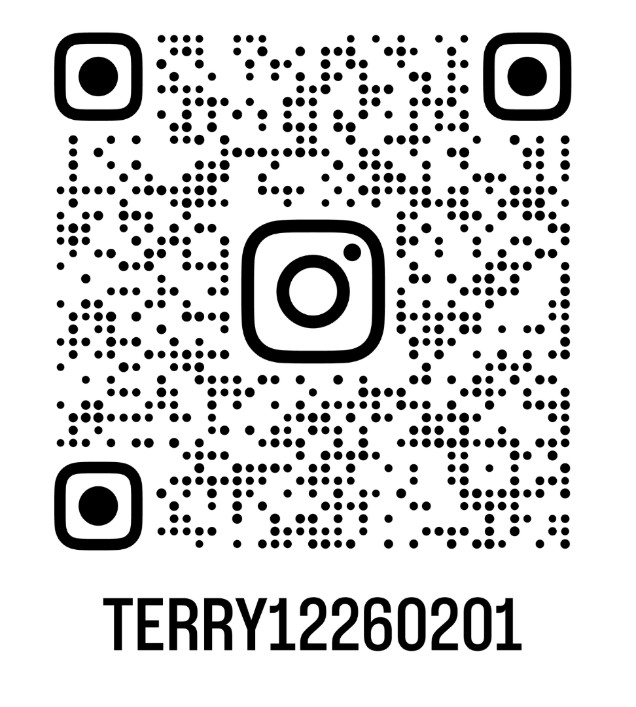
從今天學到的其中一個範例開始。
試試看，然後慢慢摸索出屬於你們家的方式。
每一次的嘗試，都在讓自己變得更有料。